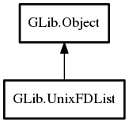

UnixFDList
Object Hierarchy:
Description:
A UnixFDList contains a list of file descriptors.
It owns the file descriptors that it contains, closing them when finalized.
It may be wrapped in a GUnixFDMessage and sent over a Socket in the
g_socket_address_unix family by using
send_message and received using receive_message.
Note that `<gio/gunixfdlist.h>` belongs to the UNIX-specific GIO interfaces, thus you have to use the `gio-unix-2.0.pc` pkg-config file when using it.
Namespace: GLib
Package: gio-2.0
Content:
Creation methods:
Methods:
Inherited Members:
All known members inherited from class GLib.Object